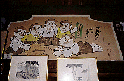

常楽寺（まんが寺）/川崎市中原区
ヴェルディ川崎のホームグラウンドでお馴染み、等々力緑地の近くに常楽寺という寺がある。別名、日本漫画博物館。まんが寺とも呼ばれている。
お寺で博物館、というと寺の境内に宝物館があったりする姿を想像しがちだが、さにあらず。
本堂の襖や欄間や壁に漫画が描いてあるのだ。
つまり寺と博物館が完全に一体化している珍しいところなのだ。お寺自体が博物館といってもいいだろう。
ってな予備知識を仕入れ、いざ常楽寺に向かう。本堂にはすでに中に入りきれないのか外壁にまでまんが絵馬が架けられている。で、本堂に入ろうとすると鍵が掛かっているので庫裏の玄関へ行き、本堂の拝観を申し込む。すると90位の婆さんが玄関先ですんごく嫌そうな顔をして（というより警戒してか）拝観は予約制になっている事、一応漫画博物館とうたっているが、漫画目当てのみの拝観は必ずしも寺としては本意ではないという事を伝えられ、「ま、どうしても、と言うなら....」と渋々本堂の扉を開けてくれた。
ちょっとまて、予約の事はこちらも知らない事だがまあ、そうなっているのなら仕方ない。しかし漫画博物館とうたっておいて来館者にその態度はないでしょ！！と、思ったけど文句いったら入れてくれないかもしれないので「や〜、どうもすいませんねえ〜」などと下手に出つつ本堂に上がり込む。
なまじ普通の博物館と思っていたこちらが悪いのだ。と自分に言い聞かせる。私は天下御免の気弱者なのだ。それ以上に寺さえ見せてもらえばそれ以外の事、例えば住職にカツアゲされたりとか法外な拝観料をとられたりとかビール１本が5万円だったりとかしても、そんな事は些細な事なのである。

で、本堂に上がり辺りを見回す。漫画、漫画、漫画の渦だ。襖という襖、欄間という欄間全てに漫画が描かれている。それも皆違う漫画家によるもののようである。
気が付くと先ほどの婆さんが目の前に正座している。何かここの説明でもしてくれるらしい。襖の漫画をもっと良く見たいのだが、仕方が無いのでその前に正座する。
婆さんの説明に拠れば
、この寺の創建は古い。千年程前からあるといわれている。この本堂に漫画が描き始められたのが昭和40年代。先代の住職（婆さんの御主人、故人）が当時人気のあった漫画家に描かせたらしい。しかし歴史が千年あって、文化財がうじゃうじゃあって、という話をしているときには鼻の穴が全開なのに、肝心のまんが寺になった経緯を説明するときの婆さんの話し方はそっけない。「ま、これだけいろんな人が来るんだから、住職もいいことしたんでしょ」てな感じ。婆さん自身はまんが寺計画にはあまり乗り気ではなかったらしい。
この時点ですでに30分近く。足が痺れてきた。横目でチラチラと襖や欄間を眺めつつ、まだ婆さんの話は続く。先代の住職の没後、ここの住職というものはいなくなってしまい、現在、婆さんだったか前住職だったかの甥っこだかなんだかがとりあえず他の寺との兼任の住職になって云々........という辺りから話しがだんだんドス黒くなってきた。どうやらお婆さん、なんか別のスイッチはいちゃったみたい.......
その後は延々と昔話＆いろんな人（勿論私は知らない人）の悪口などに独り話を咲かせ、私の足＆お脳の痺れを加速させてくれた。その後の話はあまりにも婆さん＆この寺の立場をナニしてしまうので割愛させていただきます。ただ、婆さんの名誉のためにひとつ付け足すと、この日の私のようにいきなり寺に現れる者にはろくな者がおらず、寺の土地を狙った不動産業者やホームレスなどが独り身の婆さんのところにしょっちゅう来るのでおっかない、との事。それで先ほどの態度も頷ける。婆さん、心の中で罵ってゴメンね。
てな訳で結局、解放されたのは小1時間ほど話を聞かされてから。ようやく漫画が見られる。
本堂の中は縦に4つに仕切られている。左から客殿、本殿、サブ本殿のような部屋、物置きのような部屋、となっており、それらを繋ぐ廊下状のホールが手前にある。それらすべての部屋のすべての壁面に漫画が描かれているのだ。

前述のとおりここの漫画は昭和40年代のもの。あくまでも「ヒゲとボイン」でお馴染みの小島功先生やお笑いマンガ道場の川島なおみ、もとい富永一朗先生などのペーソス感あふれるのほほ〜んのほほ〜んとした漫画が中心なのだ。
しかし、そんな中にも昭和40年代の濃ゆ〜い御時世のエッセンスがぎっちり凝縮された風刺画が多数あり興味深い。
栄作、角栄、万博、ドリフ、公害、横井さん＆小野田さん、ランランカンカン等々。わかんない人、御免ね。
その他、「明治百年（これも昭和40年代的）の思ひで」というタイトルで各漫画家が明治よりこっちの事件や流行、風俗を描いたものや弘法大師の生涯を描いたものなど作品数は数知れず、まさに博物館の名に相応しい品揃え。
ちなみに私の一番のお気に入りはこれ。
さらにサブ本殿のような部屋などは派手な照明に彩られており、漫画襖と相まって、これも怪し気で大変よろしい。赤い照明に照らし出された如来像のなんとエロティックな事よ。
そしてとどめは廊下にびっしりと貼られた各漫画家からの年賀状。これを見る限りでは先代の住職は漫画家の神様（寺だから仏様か）のような人であったようだ。そしてこの寺は漫画家の心の拠り所というか聖地のようなところだったようだ。
もしも現住職が漫画好きで先代の住職の偉業を継いでいたら、などと想像してしまう。
襖にエヴァとかガンダムとかゴルゴ13とか極道ステーキとか女犯坊とかそーゆー「マンガ」が描かれている図を独り想像しほくそ笑んでしまうのである。
どなたか漫画が好きな真言宗の坊さんがいたらここの専従住職になるというのは如何だろうか。でもって現代の「マンガ」の聖地に仕立て上げちゃうというのも一興かも。婆さんも喜ぶ.....と思わないけど。
というわけで、ここを訪問の際は御予約をお忘れなく。
1999.5
珍寺大道場 HOME